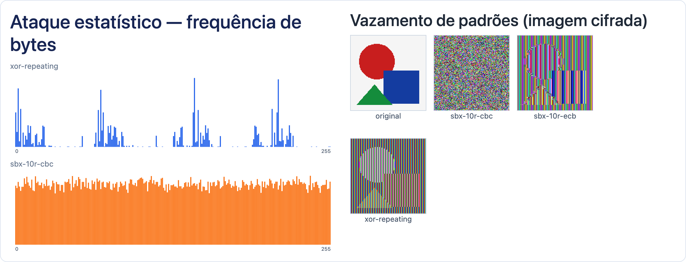
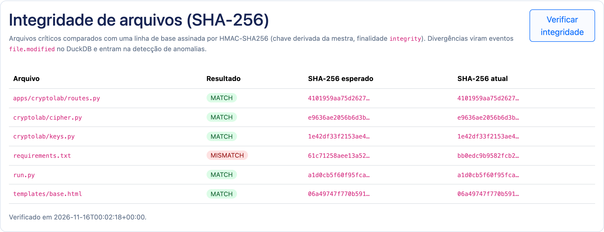
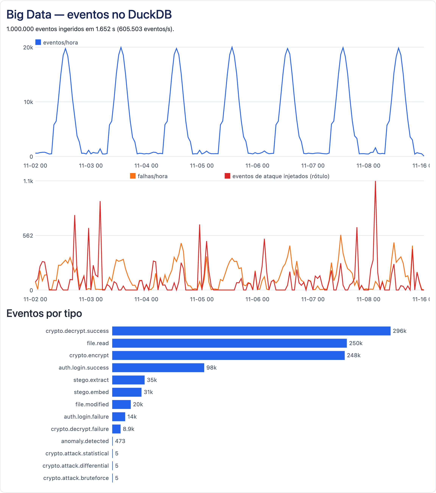
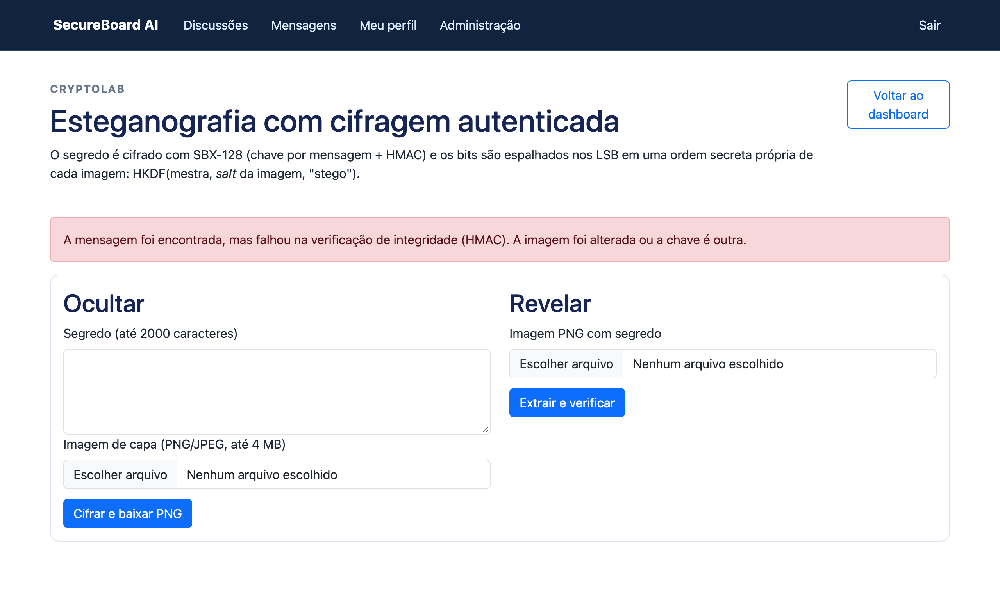

CryptoLab: sistema criptográfico e análise de ataques
Cifra simétrica própria com chave dinâmica, esteganografia, Big Data, IA e dashboard de segurança
Projeto
Disciplina
Equipe
SecureAI Lab — Projeto 2 (continuação do SecureBoard AI)
Cibersegurança Aplicada a Dados e IA Profa. Renatta Nigro
Eurivaldo José de Vasconcelos Filho Alec Carneiro Theotônio Lucas Ferraz Santana Filgueiras Felipe Rodrigues Serpa Azevedo Pedro Wanderley de Lira Santos
Resumo
O CryptoLab é um módulo do SecureBoard AI (Flask + SQLite) que implementa e ataca uma cifra de blocos própria, a SBX-128: XOR com chaves de rodada, substituição por S-box dependente da chave, permutação de bytes e mistura linear em GF(28), em 10 rodadas sobre blocos de 128 bits. A chave de cada mensagem, arquivo ou imagem é derivada dinamicamente (HKDF-SHA256 + salt aleatório) de uma chave mestra versionada, com chaves separadas para cifrar e autenticar (CBC + HMAC-SHA256). O sistema cifra texto, arquivos e imagens, esconde o segredo cifrado em imagens por esteganografia LSB e registra as operações em um repositório colunar (DuckDB/Parquet), onde um Isolation Forest detecta comportamento anômalo. Arquivos críticos são verificados por SHA-256 contra uma linha de base assinada. Um dashboard administrativo mostra ataques, anomalias e resultados.
A equipe atuou como analista de segurança da própria cifra. Cinco variantes, da didática à de referência de mercado, foram submetidas a força bruta, análise diferencial (avalanche e SAC) e análise estatística (χ², entropia, blocos repetidos e ataque de frequência). A variante completa apresentou avalanche de 49,94%, saída estatisticamente uniforme (χ² p = 0,60; 7,997 bits/byte) e espaço de chave de 2256. As variantes enfraquecidas foram quebradas: a cifra XOR teve a chave recuperada só com o texto cifrado. O pipeline processou 1.000.000 de eventos, e o detector híbrido alcançou recall de 96,1%.
49,94%avalanche SBX-128
2256espaço de chave
1.000.000eventos analisados
96,1%recall do detector híbrido
Resposta ao feedback do Projeto 1
"Evitar a dependência de uma única chave simétrica para diferentes operações ou usuários." Nenhuma chave cifra mais de um objeto. A mestra só deriva chaves: uma por mensagem, por arquivo, por imagem e por conversa, separadas por finalidade (cifragem, MAC, S-box, permutação, rodadas, esteganografia, integridade). O inventário completo está na seção 02. No SecureBoard, as mensagens privadas passaram à versão 2, com uma chave por conversa.
"Itens faltantes no relatório." As seções seguem os cinco itens pedidos na Parte 5, e o registro de uso de IA traz os sete campos exigidos (seção 07). O mapa abaixo indica onde cada item está.
Item pedido (Parte 5)
Seção
Item pedido
Seção
Arquitetura do sistema
01
Testes realizados
03 e 04
Descrição do algoritmo
02
Resultados (e respostas da Parte 4)
05
Funcionamento
02
Conclusão
06
01 Arquitetura
Arquitetura do sistema e decisões de projeto
A arquitetura segue as seis camadas do enunciado. Cada camada é um módulo Python independente do Flask em cryptolab/, testável isoladamente. O dashboard (apps/cryptolab) é só a camada de apresentação e herda do SecureBoard o RBAC no servidor, o CSRF, a CSP e o registro de auditoria.
1. EntradaTexto (mensageria simulada), arquivos quaisquer e imagens PNG/JPEG
2. CriptografiaSBX-128 + CBC + HMAC, chave por objeto; AES-256-GCM como referência
3. EsteganografiaPayload selado em LSB, ordem secreta por imagem
4. Big DataDuckDB colunar, 1M eventos, Parquet; integridade SHA-256
5. IAIsolation Forest + regras em janelas ator × 5 min
6. DashboardAlertas, gráficos, ataques, integridade e conclusões
Módulo
Responsabilidade
Decisão e justificativa
cryptolab/keys.py
Chaveiro, HKDF e rotação
A mestra só deriva outras chaves. Finalidades fixas garantem separação de domínio: comprometer uma chave derivada não revela as demais.
cryptolab/cipher.py
SBX-128, modos e envelope
Cifra SPN parametrizável em rodadas e modo, para comparar versões fracas e fortes do mesmo projeto.
cryptolab/files.py
Cifragem de arquivos
Mesmo envelope autenticado; o nome original vai dentro do conteúdo cifrado.
cryptolab/stego.py
LSB, PSNR, esteganálise χ²
Esconde o payload já cifrado e autenticado: a esteganografia oculta a existência; a criptografia protege o conteúdo.
cryptolab/events.py, simulate.py
Armazenamento e carga sintética
DuckDB é colunar e vetorizado, adequado a varreduras analíticas; o Parquet permite migrar para Spark ou BigQuery. O SQLite segue como base transacional.
cryptolab/integrity.py
Integridade de arquivos
SHA-256 dos arquivos críticos contra linha de base assinada por HMAC; divergências viram eventos reais.
cryptolab/anomaly.py
Detecção de anomalias
Modelo não supervisionado (não exige exemplos de ataque), comparado a regras transparentes e avaliado com rótulos de verdade.
cryptolab/attacks.py, experiments.py
Ataques e métricas
Sementes fixas: flask --app run cryptolab-all reproduz todos os números deste relatório.
Tipo de dado e por que uma cifra própria
O tipo principal é texto em mensageria simulada, por coerência com as mensagens privadas do SecureBoard. Arquivos e imagens completam a entrada do diagrama do enunciado. O diagrama cita AES-256, mas o objetivo da atividade é criar o algoritmo e atacá-lo; por isso a SBX-128 é a cifra estudada, e o AES-256-GCM entra como referência de comparação em todos os testes. A aplicação real do SecureBoard continua com AES-256-GCM (justificativa na seção 06).
Requisitos do enunciado × implementação
Requisito
Onde está
Evidência
Chave influencia a cifragem e não é fixa
HKDF(mestra, salt aleatório) por objeto; rodadas, S-box e permutação dependem da chave
Mesma mensagem cifrada duas vezes gera saídas diferentes; avalanche de chave de 49,91% (seção 03)
SAC: desvio cai de 0,469 (1 rodada) para 0,033 (10 rodadas), seção 03
Esteganografia em imagens
/admin/cryptolab/stego
PSNR de 65,3 dB; 3 de 3 adulterações rejeitadas (seção 03)
Big Data: logs cripto, autenticação, anomalias, padrões, grandes volumes
DuckDB + importação pseudonimizada do SecureBoard
1M de eventos; 14 tipos de evento (seção 04)
Anomalias do enunciado (as cinco)
Isolation Forest + regras; integridade SHA-256 para arquivos
Recall por família e MISMATCH real (seção 04)
Força bruta, diferencial e estatístico
attacks.py
Seção 03
Avalanche, distribuição e resistência
experiments.py
Seções 03 e 05
Dashboard de ataques, anomalias e resultados
/admin/cryptolab (somente admin)
Capturas nas seções 03, 04 e 06
02 Descrição do algoritmo e funcionamento
SBX-128: como cifra e como gerencia as chaves
A SBX-128 é uma rede de substituição e permutação (SPN) com blocos de 16 bytes e 10 rodadas. Cada rodada combina as quatro operações exigidas, numa ordem em que cada uma compensa a fraqueza da outra: o XOR sozinho é linear e a S-box sozinha atua byte a byte.
para r = 1..10:
estado ^= K[r-1] # XOR com chave de rodada (introduz o segredo)
estado = SBOX[estado] # substituição não linear, S-box gerada pela chave (confusão)
estado = PERM(estado) # permutação de bytes gerada pela chave (espalha posições)
se r < 10: MixColumns(estado) # combinação linear em GF(2^8) (difusão entre bytes)
estado ^= K[10] # branqueamento final
Funcionamento: geração dinâmica de chaves
Chave mestra de 256 bits, gerada com secrets, fora do código (CRYPTOLAB_MASTER_KEYS), identificada por key_id. Ela nunca cifra dados.
Por objeto: um salt aleatório de 16 bytes gera k_enc = HKDF(mestra, salt, "enc") e k_mac = HKDF(mestra, salt, "mac"). A chave efetiva muda a cada mensagem e a cada arquivo.
Key schedule: de k_enc saem as 11 chaves de rodada, a S-box (Fisher–Yates com amostragem por rejeição) e a permutação de 16 posições. Trocar 1 bit da chave muda as três.
Rotação:KeyRing.rotate() cria uma nova mestra ativa; as antigas só decifram, e o key_id do envelope indica qual usar.
Modo de operação e integridade
Mensagens maiores que um bloco usam CBC com IV aleatório e padding PKCS#7. O envelope aplica encrypt-then-MAC: a tag HMAC-SHA256 cobre cabeçalho, salt, IV e texto cifrado e é verificada em tempo constante antes de decifrar. Qualquer bit alterado gera CryptoLabIntegrityError e nada é devolvido, o que elimina oráculos de padding (o teste altera cada bit do envelope).
"SBX1" | key_id (1 B) | salt (16 B) | IV (16 B) | texto cifrado (n×16 B) | HMAC-SHA256 (32 B)
Arquivos usam o mesmo envelope: tamanho do nome | nome | conteúdo é selado inteiro, então nem o nome vaza. Na esteganografia, o envelope é gravado nos LSB numa ordem secreta: os 128 primeiros LSB guardam um salt público da imagem, e a ordem dos demais vem de HKDF(mestra, salt_imagem, "stego"). Duas imagens nunca compartilham a mesma ordem.
Consequência: vazar uma chave derivada expõe um único objeto, e chaves de finalidades diferentes nunca se repetem (separação de domínio). Os testes provam que uma conversa não abre outra, que o mesmo arquivo cifrado duas vezes gera saídas diferentes e que a chave da ordem de uma imagem não extrai o conteúdo de outra.
Variantes analisadas
Variante
Construção
Papel no estudo
xor-repeating
XOR com chave de 4 bytes repetida
Linha de base vulnerável: sem difusão
sbx-1r-ecb / sbx-10r-ecb
SBX com 1 ou 10 rodadas, ECB
Efeito das rodadas; primitiva forte em modo inseguro
sbx-10r-cbc
Sistema completo (chave dinâmica, CBC, HMAC)
Proposta da equipe
aes-256-gcm
Biblioteca cryptography
Referência de mercado
03 Testes realizados
Ataques: força bruta, diferencial e estatístico
Força bruta: espaço de chave e viabilidade
Método. Ataque com texto claro conhecido. A chave real foi fixada com uma semente e o atacante conhece todos os bits menos os primeiros n, buscados exaustivamente (12 bits na SBX, 16 no XOR e no AES). A taxa medida é extrapolada para o espaço completo (média de 2k−1 tentativas).
Variante
Busca real
Taxa medida
Espaço
Tempo médio (taxa medida)
Tempo médio a 1012 chaves/s
xor-repeating
216: chave achada em 62.898 tentativas
346.904/s
232
1 h 43 min
2 ms
sbx-1r-ecb
212: achada
4.059/s
2256
4,5×1065 anos
1,8×1057 anos
sbx-10r-cbc
212: achada
2.430/s
2256
7,6×1065 anos
1,8×1057 anos
aes-256-gcm
216: achada
259.503/s
2256
7,1×1063 anos
1,8×1057 anos
Avaliação. A busca sempre acha a chave quando o espaço é pequeno: o ataque está correto. A chave de 32 bits do XOR cai em menos de 2 horas num notebook. Com 2256, mesmo 1012 chaves/s exigiriam 1057 anos (o universo tem 1,4×1010). A SBX é cerca de 100 vezes mais lenta por tentativa que o AES, porque o key schedule (HKDF + embaralhamento) é caro. Isso encarece a força bruta, mas é efeito colateral: a segurança vem do tamanho do espaço.
Ataque diferencial: alterar 1 bit e comparar saídas
Método. Em 1.000 amostras: chave e texto aleatórios de 15 bytes (um bloco após o padding), IV e salt fixos para isolar o efeito. Altera-se 1 bit do texto (ou da chave), cifra-se de novo e mede-se a fração de bits diferentes (distância de Hamming) apenas no texto cifrado; a tag fica de fora, porque muda ~50% em qualquer cifra e mascararia uma difusão fraca. O ideal é 50%. O SAC mede, para cada par (bit de entrada, bit de saída), a probabilidade de inversão: 128×128 probabilidades, ideal 0,5.
Variante
1 bit texto
com a tag
1 bit chave
xor-repeating
0,83%
—
3,1%
sbx-1r-ecb
3,12%
—
50,0%
sbx-10r-ecb
50,22%
—
50,2%
sbx-10r-cbc
49,94%
49,98%
49,91%
aes-256-gcm
0,83%
26,0%
50,0%
Rodadas
desvio médio do SAC
desvio máximo
1
0,469
0,50
2
0,375
0,47
4
0,032
0,16
10
0,033
0,18
Impacto medido. Com 1 rodada, alterar 1 bit muda exatamente 1 byte (≈4 de 128 bits): a diferença não se propaga. A difusão completa aparece a partir de 4 rodadas, e 10 rodadas deixam margem. A avalanche de chave já é de 50% com 1 rodada porque vem do HKDF no key schedule. No AES-GCM, os 0,83% no corpo são esperados: o GCM usa CTR (cifra de fluxo), então 1 bit no texto muda 1 bit do corpo e só a tag muda por completo. A segurança do GCM vem do nonce único e da autenticação; por isso a avalanche, sozinha, não é critério de segurança.
03 Testes realizados (continuação)
Ataque estatístico e esteganografia
Método. O texto em português do laboratório, repetido (~60 KB), foi cifrado em cada variante. Sobre o texto cifrado: histograma dos 256 valores de byte, χ² contra a uniforme (255 graus de liberdade), entropia de Shannon, correlação serial e blocos de 16 bytes repetidos, este também numa entrada padronizada ("0123456789ABCDEF" × 1.000). Depois, um ataque só com o texto cifrado (Kasiski/Friedman): o índice de coincidência estima o tamanho da chave, e cada byte da chave é o que maximiza a frequência de letras do português.
Variante
χ²
p-valor
Entropia (bits/byte)
Blocos repetidos (texto / padrão)
Ataque de frequência
xor-repeating
242.013
≈ 0
6,13
2.769 / 999
chave recuperada
sbx-1r-ecb
60.831
≈ 0
7,30
2.769 / 999
falhou
sbx-10r-ecb
996,8
3×10−88
7,988
2.769 / 999
falhou
sbx-10r-cbc
248,5
0,603
7,997
0 / 0
falhou
aes-256-gcm
248,5
0,603
7,997
0 / 0
falhou
Resultado. No XOR repetido, o índice de coincidência apontou chave de 4 bytes (0,066 contra 0,019 nos demais tamanhos), e o ataque recuperou a chave f5b16522 e 100% do texto sem nenhum texto claro. A SBX de 10 rodadas em ECB tem bytes quase uniformes (7,988 bits/byte), mas o χ² a rejeita (p = 3×10−88): blocos iguais geram cifras iguais. A versão CBC e o AES ficaram indistinguíveis de dados aleatórios (p = 0,60).

Figura 1. Histograma de bytes (XOR × SBX-CBC) e imagem cifrada: em ECB a forma do logotipo continua visível.Figura 2. Matrizes SAC (128×128 reduzidas a 32×32). Branco = probabilidade 0,5; vermelho = bits que não mudam.
Esteganografia
Numa capa de 192×192 (capacidade de 13.816 bytes), um segredo de 400 bytes, já selado, resultou em PSNR de 65,3 dB: alteração imperceptível. Alterar bits que carregam o segredo foi rejeitado pelo HMAC em 3 de 3 tentativas, e alterar o salt da imagem faz a extração falhar fechada.
Carga (% da capacidade)
PSNR
Esteganálise χ² (sequencial)
Esteganálise χ² (ordem com chave)
10%
61,1 dB
0,00 (não detectado)
0,00 (não detectado)
50%
54,2 dB
0,91 (detectado)
0,00 (não detectado)
100%
51,1 dB
0,95
0,95
Teste de pares de valores de Westfeld–Pfitzmann sobre os primeiros 30% da imagem: a inserção sequencial é detectada já com 50% de carga; a ordem com chave espalha os bits e escapa até ~50%; com a imagem cheia, nenhuma ordem esconde a alteração. Recomendação: usar até ~10% da capacidade.
04 Testes realizados: Big Data e IA
Eventos em escala e detecção de comportamento anormal
Coleta. O repositório registra operações criptográficas (crypto.encrypt, crypto.decrypt.success|failure), autenticação (auth.login.*), arquivos (file.read|modified), esteganografia, ataques executados (crypto.attack.*) e as próprias detecções (anomaly.detected). O uso real do dashboard também grava eventos. A trilha de auditoria do SecureBoard é importada com o ator pseudonimizado pela mesma chave HMAC usada na web (LGPD): uma pessoa tem um único pseudônimo, e nenhum identificador real entra no repositório analítico.
Carga experimental. O gerador (NumPy, vetorizado) simula 200 usuários por 7 dias, em geral em horário comercial e de IPs estáveis, e injeta as cinco anomalias do enunciado com rótulo de verdade:
Família
Anomalia do enunciado
Eventos / episódios
bruteforce
Número incomum de tentativas de autenticação
4.017 / 31
decrypt_storm
Frequência elevada de falhas de descriptografia
3.989 / 61
file_tamper
Alterações inesperadas em arquivos (também medidas de verdade, abaixo)
35 / 20
atypical_access
Padrões atípicos de acesso (madrugada, IPs novos, muitos recursos)
3.998 / 96
event_flood
Comportamento incomum na geração de eventos (20× a taxa)
4.124 / 6
Medida (1.000.000 de eventos)
Resultado
Ingestão no DuckDB (varredura de arrays NumPy)
1,65 s (605 mil eventos/s)*
Resumo do dashboard (5 agregações)
35 ms
Extração de 8 atributos em 220 mil janelas (ator × 5 min)
395 ms
Treino do Isolation Forest (200 árvores)
1,3 s
Armazenamento: DuckDB / Parquet (ZSTD)
14 MB / 11 MB
* Tempos medidos em notebook na bateria e com outros processos ativos. Numa execução anterior, com a máquina ociosa, a ingestão levou 0,37 s. As métricas de cifra, ataques e IA saíram idênticas nas duas execuções (sementes fixas), o que confirma a reprodutibilidade.
Integridade de arquivos: anomalia real, não só simulada
Seis arquivos críticos (run.py, requirements.txt, cifra, chaveiro, rotas e template base) são comparados por SHA-256 com uma linha de base assinada por HMAC. Sem a assinatura, um invasor que altera um arquivo poderia também refazer a linha de base. Cada divergência grava file.modified com resultado mismatch no DuckDB, e esse evento entra no atributo file_modified da IA. Na demonstração, 1 byte acrescentado ao requirements.txt gerou MISMATCH; restaurado o arquivo, voltou a MATCH.

Figura 3. Verificação SHA-256: um byte alterado em requirements.txt.

Figura 4. Volume por hora (ciclo diário), falhas e ataques injetados, e eventos por tipo.
04 Testes realizados: Big Data e IA (continuação)
Inteligência Artificial: Isolation Forest
Atributos por janela: número de eventos, falhas de autenticação, falhas de descriptografia, modificações em arquivos sensíveis, IPs distintos, recursos distintos, fração fora do horário (antes das 7h ou depois das 21h) e bytes. Os valores passam por log1p e padronização. O Isolation Forest isola pontos com partições aleatórias: janelas anômalas precisam de menos cortes. O modelo é não supervisionado (não vê os rótulos) e cada alerta traz os atributos de maior z-score, o que o torna explicável. O detector de regras é a linha de base, e o híbrido é a união dos dois.
Detector
Precisão
Recall
F1
VP / FP / FN
bruteforce
decrypt
file_tamper
atypical
flood
Isolation Forest
59,8%
85,1%
0,70
262 / 176 / 46
90%
88%
0%
99%
67%
Regras
100%
95,8%
0,98
295 / 0 / 13
92%
93%
100%
100%
100%
Híbrido (IF ∪ regras)
62,7%
96,1%
0,76
296 / 176 / 12
94%
93%
100%
100%
100%
Análise crítica
Por que as regras "ganham": foram escritas por quem conhece os ataques simulados, o que é circular; elas não detectam um ataque novo. O Isolation Forest, sem conhecer nenhum ataque, achou 85% das janelas anômalas, incluindo 99% dos acessos atípicos, que combinam vários sinais fracos.
O ponto cego da IA:file_tamper tem 0% no IF porque é um evento único numa janela que, fora isso, parece normal. Por isso arquivos críticos ganharam verificação SHA-256 dedicada (seção 04) e o desenho final é híbrido.
Falsos positivos: os 176 FP do IF são janelas legítimas raras (atividade de madrugada com várias leituras), 0,08% das janelas: cabem numa fila de triagem humana. A IA prioriza; a decisão continua humana, como na moderação do Projeto 1.
Risco de IA: um atacante que conhece os atributos pode diluir o ataque no tempo (low-and-slow) para não se destacar em janelas de 5 minutos. Mitigação: agregar em várias janelas (5 min, 1 h, 1 dia) e retreinar periodicamente.
Figura 5. Qualidade dos detectores e recall por família.Figura 6. Alertas de maior score, com motivo e rótulo real (só para avaliação).
Testes automatizados
Foram escritos 111 testes novos, cada um falhando antes da implementação: 106 do CryptoLab (chaveiro, cifra, envelope, arquivos, esteganografia, integridade, eventos, IA, ataques, dashboard e CLI) e 5 das chaves por conversa. A suíte completa tem 353 testes e passa inteira num clone limpo. Os testes de segurança cobrem acesso anônimo e de usuário comum (403 com evento authz.admin.denied), POST sem CSRF, corpo acima de 5 MB (413), upload que não é imagem, arquivo ou imagem adulterados, linha de base adulterada e ausência de chave (falha fechada).
05 Resultados
Resultados consolidados e respostas da Parte 4
Critério
XOR
SBX 1r ECB
SBX 10r ECB
SBX completa
AES-256-GCM
Avalanche (1 bit no texto)
0,8%
3,1%
50,2%
49,9%
0,8% (fluxo)
Padrões na saída
sim
sim
sim (ECB)
não
não
Força bruta (espaço completo)
~2 h
1057 anos
1057 anos
1057 anos
1057 anos
Ataque que funcionou
estatístico
diferencial / estatístico
estatístico (ECB)
nenhum
nenhum
O sistema apresenta efeito avalanche?
Sim, na versão completa: 49,94% dos bits mudam ao alterar 1 bit do texto e 49,91% ao alterar 1 bit da chave (1.000 amostras, sem a tag), com SAC de desvio médio 0,033. Não nas variantes fracas (XOR com 0,8%; 1 rodada com 3,1%). O SAC mostra que a difusão nasce de permutação + MixColumns repetidas por pelo menos 4 rodadas.
Existem padrões na saída?
No XOR e em todo uso de ECB, sim: histograma não uniforme, 999 blocos repetidos em 1.000 na entrada padronizada e a imagem visível através da cifra. No sistema completo (CBC + IV aleatório + chave por mensagem), nenhum: χ² p = 0,60, 7,997 bits/byte, correlação serial de −0,001 e zero blocos repetidos, estatística equivalente à do AES-256-GCM.
Qual ataque foi mais eficaz?
O estatístico. Recuperou a chave do XOR sem nenhum texto claro e expôs o vazamento do ECB mesmo com a primitiva forte. A força bruta só vence espaços pequenos (232 em menos de 2 horas). O diferencial revelou a falta de difusão com poucas rodadas, mas não quebrou chave. Contra a SBX-128 completa, nenhum dos três teve sucesso.
O sistema é seguro? Justificativa
Resistente aos ataques testados, mas não "seguro" para produção, e a distinção importa. A favor: espaço de 2256 (força bruta inviável), avalanche e SAC próximos do ideal, saída estatisticamente uniforme, chave por objeto (o mesmo texto nunca gera o mesmo resultado), autenticação que rejeita qualquer adulteração antes de decifrar, separação de chaves por finalidade e rotação.
Contra: (1) a cifra não passou por criptoanálise pública; ataques diferenciais e lineares reais exploram características ao longo de várias rodadas, e não foram calculados limites para a S-box gerada pela chave. (2) A implementação em Python consulta tabelas com índices secretos, o que a expõe a canal lateral por cache/tempo. (3) É cerca de 100 vezes mais lenta que o AES.
06 Conclusão
Conclusão
O projeto cumpriu os objetivos do enunciado: a equipe criou uma cifra simétrica com chave dinâmica, atacou-a com força bruta, análise diferencial e análise estatística, e avaliou os resultados com métricas e comparação com o AES. A principal lição é que a segurança veio do conjunto, não de uma peça isolada: rodadas suficientes dão difusão, o modo CBC com IV aleatório elimina padrões, a chave por objeto impede que duas cifragens se repitam e o HMAC impede adulteração. Cada variante enfraquecida mostrou, na prática, o que acontece quando uma dessas peças falta.
Por isso a SBX-128 fica como laboratório, e a aplicação real do SecureBoard mantém o AES-256-GCM: ele tem as mesmas propriedades medidas aqui, mais duas décadas de criptoanálise pública e implementação em tempo constante. A gestão de chaves desenvolvida no CryptoLab (derivação por objeto e por finalidade, rotação) foi levada ao SecureBoard nas mensagens privadas, em resposta ao feedback do Projeto 1. A IA mostrou valor contra ataques volumosos e combinados, mas não substitui controles determinísticos em eventos pontuais. A integridade de arquivos por SHA-256 cobre esse ponto cego, e o desenho final é híbrido.
Limitações e próximos passos
Dados de comportamento sintéticos: as métricas de IA valem para esse gerador; dados reais têm mais ruído e nenhum rótulo.
A escala testada (1M de eventos, 11 MB em Parquet) cabe numa máquina; o Parquet permite migrar para processamento distribuído, que não foi exercitado.
A chave mestra fica em variável de ambiente. Em produção, ela iria para um KMS/HSM com rotação automática e acesso separado.
A linha de base de integridade é criada na primeira verificação (trust on first use); em produção ela seria gerada no build e verificada no deploy.
Como reproduzir
pip install -r requirements.txt
flask --app run cryptolab-genkey # gera CRYPTOLAB_MASTER_KEYS para o .env
flask --app run cryptolab-all --events 1000000 # simulação → ataques → IA → Parquet
flask --app run cryptolab-integrity # SHA-256 dos arquivos críticos (--reset após mudança legítima)
python run.py # /admin/cryptolab: dashboard, Arquivos e Esteganografia
O botão "Rodar ataques ao vivo" do dashboard executa os ataques em modo rápido numa área separada (live/), sem sobrescrever os resultados completos citados neste relatório.
Figura 7. Arquivo cifrado com 1 bit alterado: rejeitado pelo HMAC, nada é decifrado.

Figura 8. Imagem com segredo adulterada: a verificação de integridade falha fechada.
07 Uso responsável de IA
Registro de uso de IA e validação
Atende ao item "registro de utilização de IA" do Projeto 1, apontado como incompleto: ferramenta, finalidade, prompt, resposta, o que foi aproveitado, o que foi descartado e como foi validado. O registro detalhado está em docs/projeto2/registro-uso-ia.md.
Ferramenta
Finalidade
Prompt (resumo)
Resposta / aproveitado
Descartado ou corrigido
Como foi validado
Claude Code (Claude Opus 5.5)
Planejamento a partir do PDF do Projeto 2 e do feedback do P1
"Planeje a atividade inteira e execute até cumprir todos os requisitos"
Plano de 10 tarefas com interfaces e testes por tarefa
Parâmetros iniciais ajustados após medição (contaminação 0,02 → 0,002)
Cada requisito do PDF mapeado a um teste ou evidência (seção 01)
Claude Code
Implementação com TDD
Tarefas do plano, uma por vez
Código de cryptolab/ e do dashboard
Um teste com erro (decodificava o PNG como texto) foi corrigido
Teste falhando antes e passando depois; suíte completa a cada tarefa
Claude Code
Escolha das medidas de ataque
"Como medir avalanche sem diluição por CBC/padding?"
Avalanche sobre 1 bloco; SAC por número de rodadas
A métrica inicial em mensagens longas subestimava a difusão
Valores conferidos com a teoria (≈50%; 1 rodada → 1 byte)
Claude Code
Revisão da execução completa
Inspeção do results.json com 1M de eventos
O teste de adulteração da esteganografia alterava um pixel que não carregava o segredo
A métrica "tamper_detected = False" não era falha real
Novo teste altera bits do payload: 3/3 rejeitados
Claude Code
Análise da IA de anomalias
"Por que file_tamper tem recall 0 no IF?"
Explicação (evento pontual) e detector híbrido
"Ajustar o IF até pegar tudo" (sobreajuste)
Recall por família contra os rótulos
Claude Code (revisor independente)
Revisão final do branch
"Revise segurança e se os números do relatório batem com o código"
Correção do erro 500 com DuckDB bloqueado; avalanche sem a tag
Achados menores registrados como pendências
Testes que reproduziam cada achado
Claude Code
Revisão "com olhar de professor" contra o enunciado e o feedback do P1
"Veja se tudo que a professora pediu foi contemplado e corrija o que faltar"
Achou a ordem da esteganografia com chave única para todas as imagens, a ausência de arquivos na entrada, file_tamper só sintético, as pendências e referências cruzadas erradas no relatório
Nenhuma pendência ficou só documentada: todas foram corrigidas
22 testes novos (vermelho → verde); suíte de 353 testes passando num clone limpo; números do relatório conferidos com o results.json
Princípio adotado: nenhuma saída da IA foi aceita sem execução. Toda afirmação de comportamento tem um teste automatizado ou uma medida reproduzível com semente fixa. A IA errou e foi corrigida pela evidência em casos concretos (métrica de adulteração, teste mal escrito, contaminação do modelo, chave da esteganografia), o que mostra que a validação teve efeito.
Referências
NIST FIPS 197 (AES; MixColumns em GF(28)). NIST FIPS 180-4 (SHA-256). RFC 5869 (HKDF). RFC 2104 (HMAC). NIST SP 800-38A (modos ECB/CBC) e SP 800-38D (GCM). NIST SP 800-57 (gerenciamento de chaves). Webster & Tavares (1985), On the design of S-boxes (SAC). Shannon (1949), Communication Theory of Secrecy Systems (confusão e difusão). Westfeld & Pfitzmann (1999), Attacks on Steganographic Systems (teste χ²). Liu, Ting & Zhou (2008), Isolation Forest, ICDM. Documentação do DuckDB e do Apache Parquet. Lei nº 13.709/2018 (LGPD), aplicada na pseudonimização dos eventos importados.